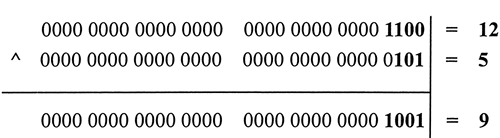

首页 > 编程笔记
JS &、|、^和~（逻辑位运算符）
位运算就是对二进制数执行计算，是整数的逐位运算。例如，1+1=2，在十进制计算中是正确的，但是在二进制计算中，1+1=10；对于二进制数 100 取反，等于 001，而不是 -100。
位运算符有 7 个，分为两类：
逻辑位运算符与逻辑运算符的运算方式是相同的，但是针对的对象不同。逻辑位运算符针对的是二进制的整数值，而逻辑运算符针对的是非二进制的值。
在位运算中，数值 1 表示 true，0 表示 false，反之亦然。
12 和 5 进行位与运算，则返回值为 4。
下图以算式的形式解析了 12 和 5 进行位与运算的过程。通过位与运算，只有第 3 位的值为全为 true，故返回 true，其他位均返回 false。

12 和 5 进行位或运算，则返回值为 13。
下图以算式的形式解析了 12 和 5 进行位或运算的过程。通过位或运算，除第 2 位的值为 false 外，其他位均返回 true。

12 和 5 进行位异或运算，则返回值为 9。
下图以算式的形式解析了 12 和 5 进行位异或运算的过程。通过位异或运算，第 1、4 位的值为 true，而第 2、3 位的值为 false。
对 12 进行位非运算，则返回值为 -13。
下图以算式的形式解析了对 12 进行位非运算的过程。
位非运算实际上就是对数字进行取负运算，再减 1。例如：
位运算符有 7 个，分为两类：
- 逻辑位运算符：位与（&）、位或（|）、位异或（^）、非位（~）
- 移位运算符：左移（<<）、右移（>>）、无符号右移（>>>）
逻辑位运算符与逻辑运算符的运算方式是相同的，但是针对的对象不同。逻辑位运算符针对的是二进制的整数值，而逻辑运算符针对的是非二进制的值。
“&”运算符
“&”运算符（位与）用于对两个二进制操作数逐位进行比较，并根据下表所示的换算表返回结果。| 第一个数的位值 | 第二个数的位值 | 运算结果 |
|---|---|---|
| 1 | 1 | 1 |
| 1 | 0 | 0 |
| 0 | 1 | 0 |
| 0 | 0 | 0 |
在位运算中，数值 1 表示 true，0 表示 false，反之亦然。
12 和 5 进行位与运算，则返回值为 4。
console.log(12 & 5); //返回值4
下图以算式的形式解析了 12 和 5 进行位与运算的过程。通过位与运算，只有第 3 位的值为全为 true，故返回 true，其他位均返回 false。
“|”运算符
“|”运算符（位或）用于对两个二进制操作数逐位进行比较，并根据如表格所示的换算表返回结果。| 第一个数的位值 | 第二个数的位值 | 运算结果 |
|---|---|---|
| 1 | 1 | 1 |
| 1 | 0 | 1 |
| 0 | 1 | 1 |
| 0 | 0 | 0 |
12 和 5 进行位或运算，则返回值为 13。
console.log(12 | 5); //返回值13
下图以算式的形式解析了 12 和 5 进行位或运算的过程。通过位或运算，除第 2 位的值为 false 外，其他位均返回 true。
“^”运算符
“^”运算符（位异或）用于对两个二进制操作数逐位进行比较，并根据如表格所示的换算表返回结果。| 第一个数的位值 | 第二个数的位值 | 运算结果 |
|---|---|---|
| 1 | 1 | 0 |
| 1 | 0 | 1 |
| 0 | 1 | 1 |
| 0 | 0 | 0 |
12 和 5 进行位异或运算，则返回值为 9。
console.log(12 ^ 5); //返回值9
下图以算式的形式解析了 12 和 5 进行位异或运算的过程。通过位异或运算，第 1、4 位的值为 true，而第 2、3 位的值为 false。

“~”运算符
“~”运算符（位非）用于对一个二进制操作数逐位进行取反操作。- 第 1 步：把运算数转换为 32 位的二进制整数。
- 第 2 步：逐位进行取反操作。
- 第 3 步：把二进制反码转换为十进制浮点数。
对 12 进行位非运算，则返回值为 -13。
console.log( ~ 12 ); //返回值-13
下图以算式的形式解析了对 12 进行位非运算的过程。
位非运算实际上就是对数字进行取负运算，再减 1。例如：
console.log( ~ 12 == 12-1); //返回true
关注公众号「站长严长生」，在手机上阅读所有教程，随时随地都能学习。内含一款搜索神器，免费下载全网书籍和视频。

微信扫码关注公众号